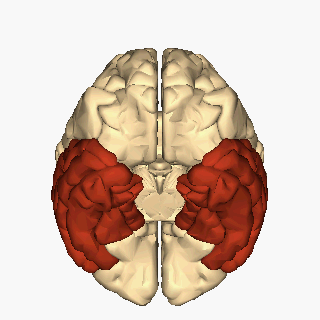

1. Generalidades y Ubicación
El lóbulo temporal está situado en el lateral inferior del encéfalo, aproximadamente a la altura de los
oídos, representando un 17% de la superficie cortical. Se encuentra alojado en la fosa temporal de la base
del cráneo y es una de las estructuras más importantes y estudiadas de la corteza cerebral.
Existen dos lóbulos temporales, uno en cada hemisferio cerebral. Aunque algunas de sus funciones se localizan
en un hemisferio específico, si una parte deja de funcionar por alteraciones neurológicas, estas tareas
pueden ser asumidas total o parcialmente por el hemisferio opuesto. Sus límites son porosos y difusos,
sirviendo como un concepto de referencia para el mapeo cerebral.
2. Relaciones Anatómicas y Límites
El lóbulo temporal establece diversas conexiones y límites con estructuras circundantes:
- Lóbulo Parietal: Separado en la zona lateral superior por la cisura de Silvio.
- Lóbulo Occipital y Parietal (Límite Posterior): Se continúa hacia atrás con la masa de ambos
lóbulos. Para definir su límite posterior arbitrario se toma la hendidura preoccipital (situada a
3 cm anterior al polo occipital por la impronta del peñasco). Una línea recta uniendo esta hendidura con
el surco parieto-occipital marca el límite anterior del occipital; proyectando otra línea casi
horizontal desde el punto medio de la primera hacia adelante hasta la cisura de Silvio, se establece el
límite entre el lóbulo parietal y el temporal.
- Ínsula: Se conecta superiormente mediante el pedúnculo temporal.
- Globus Pallidus y Amígdala: Se conecta por delante y medialmente con el globus pallidus,
situándose la amígdala entre ambos.
- Cerebro Fronto-basal: Se relaciona por delante y lateralmente a través del limen insulae.
3. Funciones Principales
Es el lóbulo con mayor conexión con el sistema límbico (junto con el área orbito-frontal), ejerciendo gran
influencia en las emociones, estados de ánimo y la memoria.
- Integración global de la información sensorial del entorno.
- Procesamiento de los contenidos de la visión y del oído.
- Percepción visual, auditiva, olfatoria y vestibular.
- Procesamiento del lenguaje en general y funciones lingüísticas.
- Memoria semántica y almacenamiento de recuerdos.
- Regulación de respuestas emocionales y estados de ánimo.
|
4. Caras y Estructura Externa
El lóbulo temporal presenta cuatro caras principales: externa (o lateral), inferior,
superior y medial.
- Cara Externa o Lateral: Presenta dos surcos conocidos como temporal superior y temporal
inferior, los cuales dividen esta región en tres giros denominados temporal,
medial y lingual.